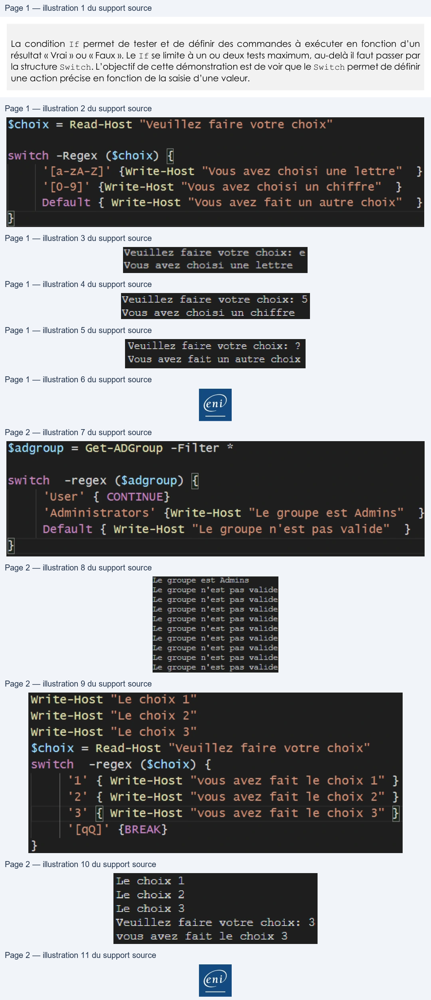

Transcription du document du Drive TSSR. La mise en forme est adaptée au Web ; les compléments IA du portail sont présentés séparément.
Initiation à PowerShell
Démonstration 08 du module 4
La condition If permet de tester et de définir des commandes à exécuter en fonction d’un résultat « Vrai » ou « Faux ». Le If se limite à un ou deux tests maximum, au-delà il faut passer par la structure Switch. L’objectif de cette démonstration est de voir que le Switch permet de définir une action précise en fonction de la saisie d’une valeur.
• Pour utiliser un Switch, il faut définir la variable qui va être testée.
•
Ensuite, on déclare les valeurs ainsi que les actions à effectuer en fonction de la valeur.
Le Switch teste, au moyen d’expressions régulières, la variable $choix. Pour cela, il faut ajouter le paramètre Regex à la commande Switch.
En cas de caractère non identifié par les deux premières conditions, c’est la sortie par défaut qui
est exécutée.
La structure Switch accède, comme la structure Foreach, les actions Continue et Break.
Page 1/2
© ENI – Tous droits réservés
$choix = Read-Host
“Veuillez
faire
votre
choix"
Switch
-Regex
($choix)
{
"[a-zA-Z]'
{Write-Host
"Vous avez choisi
une
lettre"
}
"[0-9]'
{write-Host
"Vous
avez choisi
un
chiffre"
}
Default
{ Write-Host
"Vous
avez
fait
un
autre
choix"
}
}
Veuillez faire votre
choix:
e
Veuillez
faire
votre
choix:
5
Vous avez choisi
une lettre
Vous
avez choisi un chiffre
Veuillez
faire
votre
choix:
?
Vous
avez
fait
un autre
choix
Initiation à PowerShell
Si le groupe est User, il sera non testé. Les autres groupes seront testés ensuite.
La structure Switch est largement utilisée pour constituer des menus à choix multiple.
Page 2/2
© ENI – Tous droits réservés
$adgroup = Get-ADGroup -Filter
*
switch
-regex ($adgroup)
{i
"User"
{ CONTINUE}
"Administrators'
{Write-Host
“Le groupe
est Admins”
}
Default
{ Write-Host
“Le groupe n'est
pas valide”
}
}
Le groupe est Admins
Le groupe n'est pas valide
Le groupe n'est pas valide
Le groupe n'est pas valide
Le groupe n'est pas valide
Le groupe n'est pas valide
Le groupe n'est pas valide
Le groupe n'est pas valide
Le groupe n'est pas valide
Le groupe n'est pas valide
Write-Host
"Le choix
1"
Write-Host
"Le
choix
2"
Write-Host
“Le
choix
3"
$choix = Read-Host
"Veuillez
faire votre choix"
switch
-regex ($choix)
{
"1"
{ Write-Host
‘vous
avez fait
le choix
1"
}
"2"
{ Write-Host
"vous avez fait
le choix
2"
}
"3"
{| Write-Host
“vous
avez fait
le choix
3"
}
‘[qQ]'
{BREAK}
}
Le
choix
1
Le
choix
2
Le
choix
3
Veuillez
faire
votre
choix:
3
vous
avez
fait
le
choix
3
En
